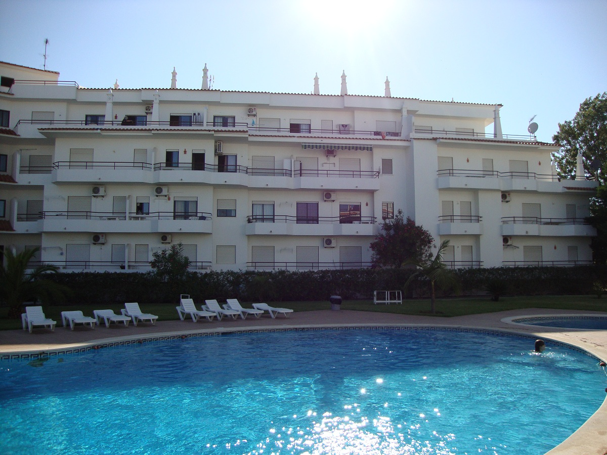
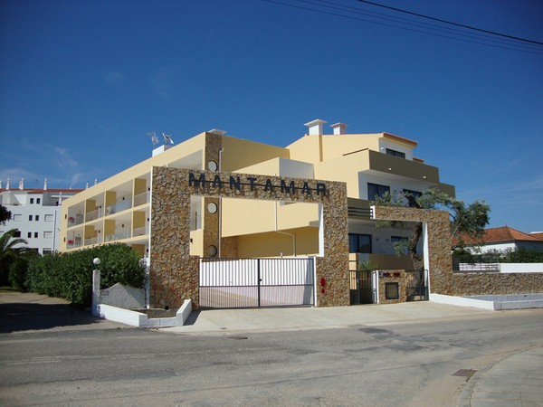
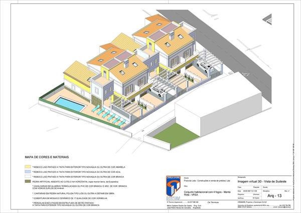
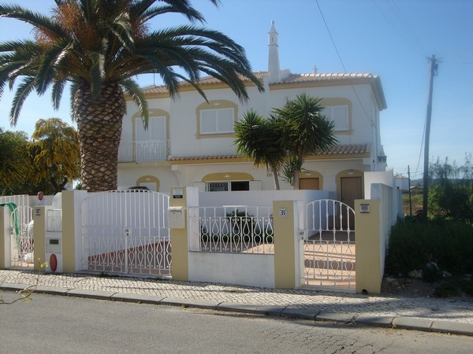
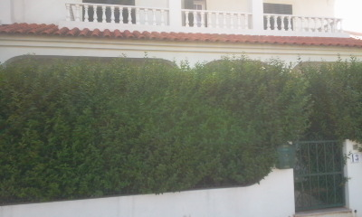
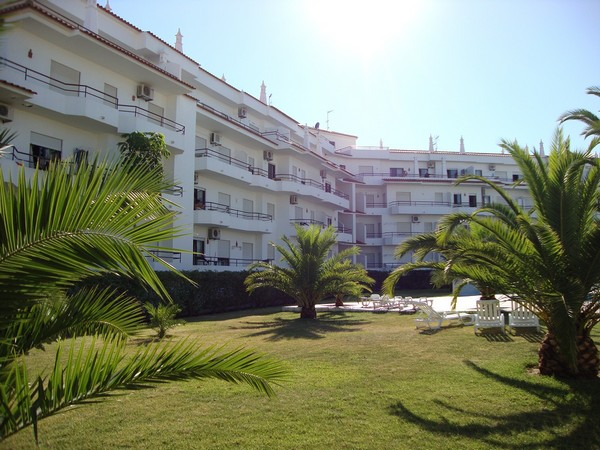
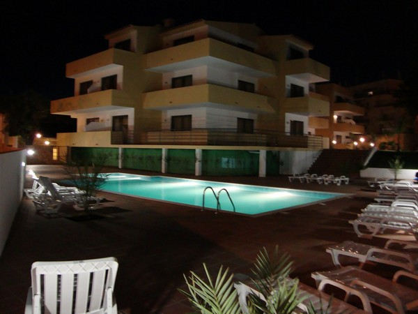
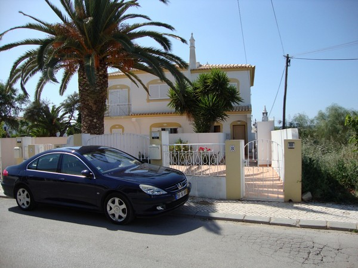

-
Apartamento Mantamar I
photos/mantamar1.jpgConjunto de apartamentos para alugar composto de edifício de 4 pisos, localizado na praia da Manta Rota, perto da praia ( concelho de Vila Real de Santo António ) Algarve.

Ler Mais -
Apartamento Mantamar II
photos/mantamar2.jpgEmpreendimento novo ( inaugurado em 2011), composto por edifício de apartamentos de três pisos e cave, na praia da Manta Rota, perto da praia ( concelho de Vila Real de Santo António ) Algarve

Ler mais -
Casas do Levante
photos/levante.jpgConjunto de moradias tipo V3, com quintal na frente e tardoz, com piscina comum, na zona norte da Manta Rota.

Ler mais -
Vivendas Lotamar
photos/lotamar.jpgSituada no sitio de Praia da Lota, Manta Rota, a cerca de 100 metros da praia. Constitui o r/c de moradia isolada, constituída por rés-do-chão e primeiro andar.

Ler mais -
Vivenda Casa da Lucia
photos/lucia.jpgSituada no sitio de Praia da Lota, Manta Rota, a cerca de 100 metros da praia. Constitui o r/c de moradia isolada, constituída por rés-do-chão e primeiro andar.

Ler mais -
Apartamento Mantamar I
photos/mantamar1-1.jpgConjunto de apartamentos para alugar composto de edifício de 4 pisos, localizado na praia da Manta Rota, perto da praia ( concelho de Vila Real de Santo António ) Algarve.

Ler Mais -
Apartamento Mantamar II
photos/mantamar2-1.jpgEmpreendimento novo ( inaugurado em 2011), composto por edifício de apartamentos de três pisos e cave, na praia da Manta Rota, perto da praia ( concelho de Vila Real de Santo António ) Algarve

Ler mais -
Vivendas Lotamar
photos/lotamar1.jpgSituada no sitio de Praia da Lota, Manta Rota, a cerca de 100 metros da praia. Constitui o r/c de moradia isolada, constituída por rés-do-chão e primeiro andar.

Ler mais -
Vivenda Casa da Lucia
photos/lucia.jpgSituada no sitio de Praia da Lota, Manta Rota, a cerca de 100 metros da praia. Constitui o r/c de moradia isolada, constituída por rés-do-chão e primeiro andar.
Ler mais